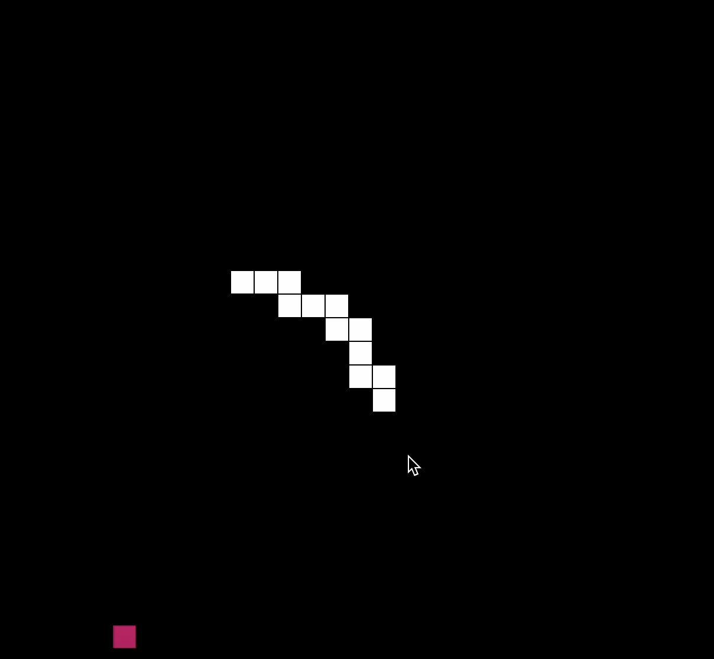
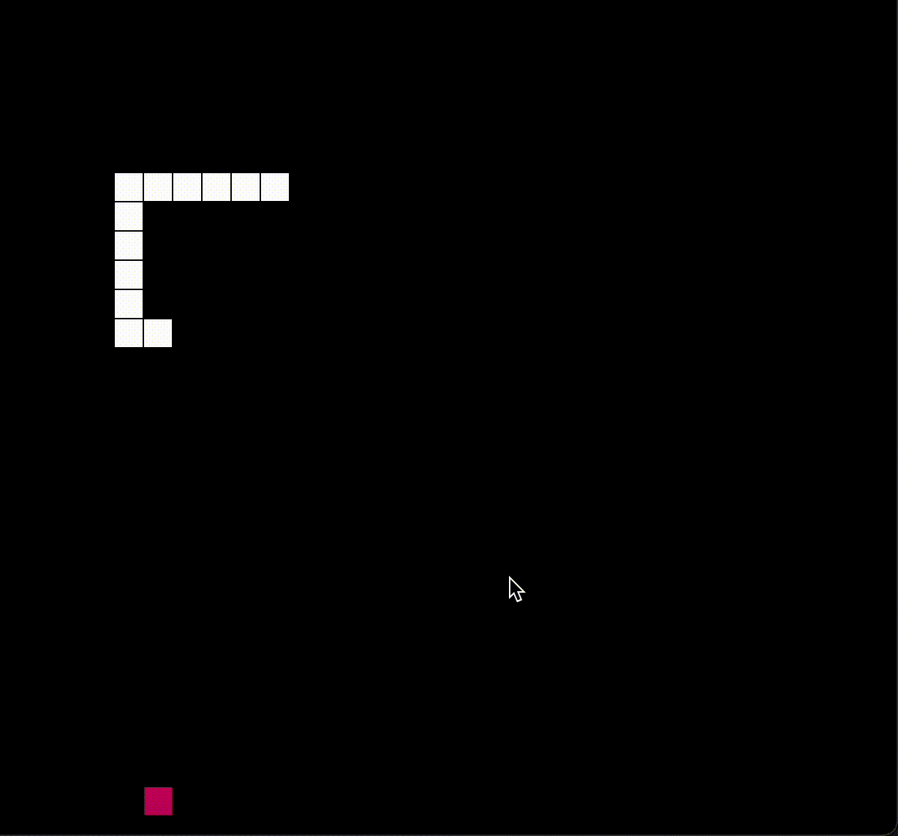

For this project, I used the p5.play.js library to create a mini version of the Snake game. The Snake game is a game where the player controls a snake using the four different arrows and eats pieces of food that is randomly generated on the board. Every time a piece of food is consumed, the snake gets longer. The game is over if the snake runs into itself or into the edge of the playing field. I followed a tutorial online to understand how to translate the basic logic of the game into code using the p5.play library and built upon the skeleton to customize it and add complexity.
Learning how to use the p5.play library in particular took some time to get used to. While I am familiar with the normal p5 and p5.sound libraries, this library had different types of logical reasonings that I could play around with. I started out my process by thinking of what game to make. I really like a vintage tech aesthetic and so I wanted to make the Snake Game reminiscent of the early 2000s and big arcade consoles. The coding was a little arduous: I had to use object-oriented programming to code the Snake for my game. While I did take CSE 142 and 143, OOP knowledge was a deep memory in my brain and required me to shake off the dust in order to remember how this type of logical thinking goes. After warming up a little, I got into a nice coding rhythm and was able to finish the game logic. However, figuring out the timing of when to call certain methods was very confusing and was the source of a lot of hair pulling for me. Additionally, there were some challenges I faced with the particular p5 library and the way that they setup their execution with the 'setup()' and 'draw()' methods. Below is an image of my buggy game when the player would die but the button to play again was not showing up on the DOM:
The most difficult part of this project was figuring out how to work with the 'setup()' and 'draw()' methods of p5. While I generally understood what they meant for the previous MP2 where we created sketches using p5, their executional meaning was crucial to the logic of gameplay. The issue just simply started as me not being able to remove a button that I had created in method that handled the behavior for when a player dies and the game ends. I triple-checked the logic for when the button would show up and even added boolean flags to ensure that it would only show up during the game over state. This solution kind of worked but not fully. So I searched online and found out that the placement of where I create and remove my button element in the code is important for when and how the button gets 'drawn' on the canvas. Below is an image of just the "game over" text displayed when the player dies, with the button missing from below it: